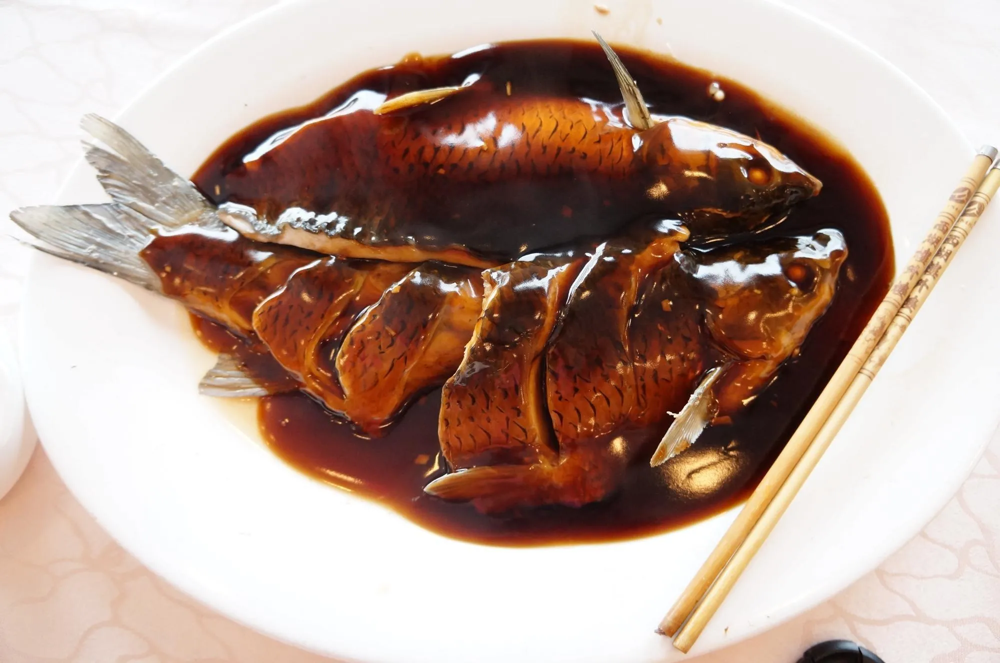
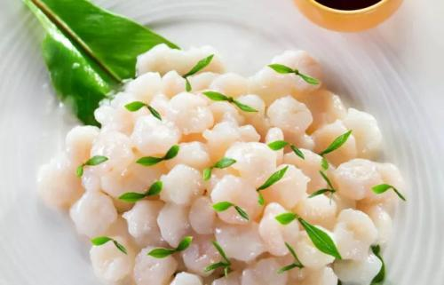
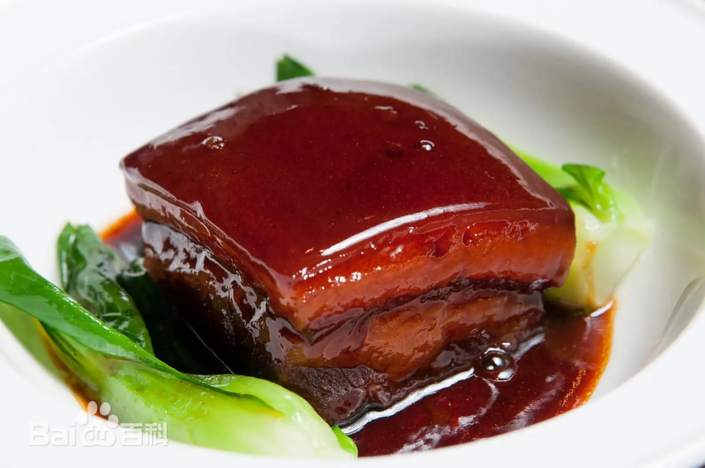

西湖醋鱼

西湖醋鱼是浙江杭州的传统名菜，属浙菜系。
其色泽红亮，肉质鲜嫩，酸甜可口，带有蟹味。
以草鱼为主料，经处理后水煮，再淋上糖醋汁而成，是杭州菜的代表之一。
龙井虾仁
龙井虾仁是杭州传统名菜，属浙菜系。
特点是虾仁洁白鲜嫩，茶叶翠绿清香，色泽雅致，滋味独特。
以新鲜河虾仁和清明节前后的龙井新茶为主料，清炒而成。

东坡肉

东坡肉是浙菜中的经典菜品，相传为苏东坡所创。
以五花肉为主料，加入黄酒、冰糖等调料，用砂锅慢炖而成。
成品色泽红亮，肉质酥烂，肥而不腻，香气四溢。